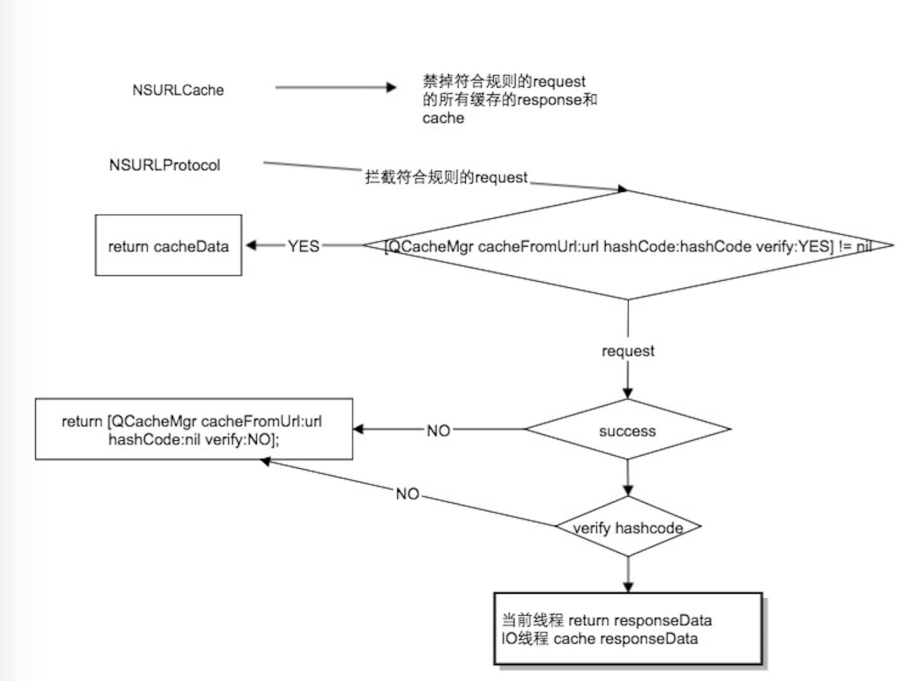

本文属于“好奇心日报app的流量和文章打开速度优化”系列文章第二篇，主要介绍为实现文章尽快的打开速度而进行的js和css的预载和缓存以及重用的逻辑。
整篇代码均为Objective-C，Android可以参考书写。
前言
好奇心日报所有文章都是自产，js和css文件在所有文章中都使用的一套进行逻辑和样式处理。在每次前端同事修改了js或者css代码后，会给该文件直接生成一个64位的hashcode附在其后，以区分不同版本，用于浏览器端更新使用，例如：
http://app3.qdaily.com/assets/app3/common-bc6aa258d92609720eb97f34f86f978367bd3d849c9c0bbc82feeed9e79b6623.js
其中主要包括common.js、show.js、common.css和show.css四个文件。
预载逻辑(此处采用的为UIWebView)
首先需要说神奇的NSURLCache，这是一个系统级管理比较完善的disk和memory兼有的缓存管理。app中的所有url请求，只要其cachePolicy设置了UseProtocolCachePolicy、ReturnCacheDataElseLoad、ReturnCacheDataDontLoad，或者没有设置，都会走NSURLCache的下面两个template方法：
- (NSCachedURLResponse *)cachedResponseForRequest:(NSURLRequest *)request;
- (void)storeCachedResponse:(NSCachedURLResponse *)cachedResponse forRequest:(NSURLRequest *)request;
以上两个方法分别处理cache的读取和存储。app中可以自定义NSURLCache的派生类，初始化该对象，然后通过[NSURLCache setSharedURLCache:cache]方法实现设置。这里其实就是一个典型的代理模式了。
- 1、请求
在处理UIWebView对js和css的request时，会先走cachedResponseForRequest方法，此处我们需要判断该request的UA是否包含“AppleWebKit”来确认是否请求来自于一个WebView。
此处我们自行判断，如果本地维护的缓存存在，则直接返回该cache data，若不存在，返回nil，UIWebView会自己去走网络加载。
- 2、存储
UIWebView自己请求的数据在完成后，会回调storeCachedResponse:forRequest方法，该方法会回调网络回来的NSData，我们可以将其存储在自己维护的缓存目录，以供下次读取。
注意，此处存储的request也要判断其UA是否包含“AppleWebKit”。
- 3、预载
为了更好的打开体验，我们在每次进入app首页情况下，如果该用户在wifi条件，会自动请求下载最新的js和css文件，然后存储到对应的Cache目录，用于优化文章打开速度和流量。
上面的整体流程如下：

有一个重要的注意点，[NSURLCache setSharedURLCache:cache]方法调用一定要在所有的网络发送之前，否则会造成以后的回调方法不能正确的调用的情况，使得缓存失效。
hashcode验证机制
以上方案遇到的问题
上面的预载机制在好奇心日报实施了1年，在提高app打开速度和优化流量方面发挥了很多作用。为了进一步提高文章打开速度和节约流量，上个月我们在文章上线了图片的延迟加载机制。就是html中的img标签的src字段先指向一个空白图，只有在当前内容在出现的屏幕中才会动态替换src为真实图片。延迟加载后，文章打开飞快，如果用户打开后不喜欢，退出也不会加载更多图片。但这样却带来了一个问题：
img标签的src替换机制全在js代码中，如果由于某种原因（网络质量查，劫持，js坏掉了），导致js代码出现问题，则所有正文图片就全部无法浏览。
延迟加载机制和我们的WebP图片质量压缩方案一起上线，初期出现了不错的效果，但后续出现三三两两的反馈，说无法看到所有正文图片。很长一段时间我们都怀疑是由于WebP导致的无法查看，毕竟iPhone的UIWebView默认是不支持WebP的，我们在这里做了一些黑科技式的处理，存在bug也是可能的。因所有测试手机、同事手机都没有出现这个问题，bug定位非常艰难。我们通过下发用户patch代码，拉去用户日志，联系用户主动截屏，终于艰难定位了原因，竟然是延迟加载导致的！部分网络情况对我们的js文件请求进行了DNS劫持，导致js文件损坏！
图片延迟加载是非常重要的优化特性，肯定不能回滚该机制。客户端在这里就一定要做js文件的正确性验证。这里正好有服务端返回的hashcode在url中，可以直接进行验证使用。
为修复这里的可能出现的网络问题，修改这里的逻辑：
- 1、app新版打包需要打包进去最新的js和css文件。
- 2、每次进行预载或者UIWebView自己的网络请求完成后，先验证下载文件的hashCode是否正确，如果不正确，要返回本地最近的缓存版本，如果没有缓存过则直接返回bundle内的文件。这里我们认为一个错误的新版js和css文件还不如用一个老版的文件。
- 3、只有下载后hashCode正确的文件才能放进缓存目录
首先定义两个工具型方法：
方法1：
/** * 方法用于判断request是否需要处理
*
* @param request
* 域名为 qdaily.com
* UA包含 AppleWebKit
* extension为 js或者css
* url规则为 http://url/name-hashcode.ext
* 上面url中hashcode为64位
* @return YES表示符合验证规则
*/
+(BOOL) shouldVerifyHashCode:(NSURLRequest*) request;方法2：
/** * 方法用户获取缓存数据
*
* @param url 网络请求的url
* @param hashCode 文件正确的hashCode
* @param verify 文件是否需要验证hashCode
* 通过url获取name，按顺序查sandbox和app mainbundle，没有返回nil。
* 如果verify为NO，直接返回上面的文件。
* verify为YES，验证上面的文件的hashcode是否相等，相等返回上面文件，不等返回nil。
* @return 缓存data OR nil
*/
+(NSData*) cacheFromUrl:(NSString*) url hashCode:(NSString*)hashCode verify:(BOOL)verify;
因为需求逻辑改变，使用NSURLCache已经无法满足我们的需求，我们使用了iOS中的另一个黑科技类NSURLProtocol。这个是所有的网络请求都会走的一个类，一般用于网络拦截、绑定只用。我们过去在这里为iPad用户的所有网络请求绑定过用户信息，而且WebP的UIWebView支持也是在这里做的处理。基本逻辑图如下：

相应的，我们在进行网络WiFi条件下预加载js和css文件时候，在下载完成也需要进行hashCode的判断，如果正确才可以进行缓存。
iOS部分实现的关键代码
- 1、获取文件的SHA256
//所有的下载完成都走这里
+ (NSString*)SHA256HashCodeWithURL:(NSURL*)URL {
NSData* dataIn = [NSData dataWithContentsOfURL:URL];
return [QFileDownloader SHA256HashCode:dataIn];
}
//所有的本地读取都走这里
+ (NSString*)SHA256HashCodeWithFilePath:(NSString*)filePath {
NSData* dataIn = [NSData dataWithContentsOfFile:filePath];
return [QFileDownloader SHA256HashCode:dataIn];
}
+ (NSString*)SHA256HashCode:(NSData*)dataIn {
if (dataIn == nil) {
return nil;
}
uint8_t digest[CC_SHA256_DIGEST_LENGTH]={0};
CC_SHA256(dataIn.bytes, dataIn.length, digest);
NSData *out=[NSData dataWithBytes:digest length:CC_SHA256_DIGEST_LENGTH];
NSString *hash=[out description];
hash = [hash stringByReplacingOccurrencesOfString:@" " withString:@""];
hash = [hash stringByReplacingOccurrencesOfString:@"<" withString:@""];
hash = [hash stringByReplacingOccurrencesOfString:@">" withString:@""];
LogD(@"SHA256HashCode : %@", hash);
return hash;
}
- 2、自定义NSURLProtocol中的关键代码
+ (BOOL)canInitWithRequest:(NSURLRequest *)request {
if ([QDCacheManager shouldVerifyHashCode:request]) {
return YES;
}
··· //其它需要使用canInitWithRequest的逻辑
return NO;
}
+(NSURLRequest *)canonicalRequestForRequest:(NSURLRequest *)request{
if ([QDCacheManager shouldVerifyHashCode:request]) {
return request;
}
···//其它需要使用canonicalRequestForRequest的逻辑
return request;
}
- (void)startLoading {
if ([QDCacheManager shouldVerifyHashCode:self.request]) {
[[QDCacheManager defaultManager]downloadSourceWithURL:self.request.URL completionBlock:^(NSData *data, NSError *error) {
if (data == nil || error != nil) {
[self.client URLProtocol:self didFailWithError:error];
} else {
[self.client URLProtocol:self didLoadData:data];
[self.client URLProtocolDidFinishLoading:self];
}
}];
return;
}
···//其它需要使用startLoading的逻辑
}
Android中WebView对应的关键方法
@TargetApi(Build.VERSION_CODES.LOLLIPOP)
@Override
public WebResourceResponse shouldInterceptRequest(WebView view, WebResourceRequest request) {
String url = request.getUrl().toString();
WebResourceResponse response = loadFromCache(url);
if (response == null) {
return super.shouldInterceptRequest(view, request);
} else {
return response;
}
}
public WebResourceResponse shouldInterceptRequest(WebView view, String url) {
WebResourceResponse response = loadFromCache(url);
if (response == null) {
return super.shouldInterceptRequest(view, url);
} else {
return response;
}
}